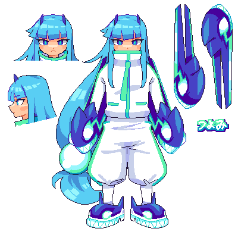
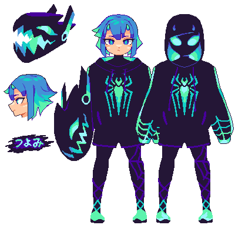

Original Character Designs & Concepts
🡸 Go back
Go to home page
Go to bottom 🡳
Tsuyomi: Tactical Gum Blast

Tsuyomi (Prime): Rush Model
Tsuyomi: Sweet Breaker

Tsuyomi: Arachne
Akari (Prime): Nekosame
Tsuyomi: Sea Bunny
🡸 Go back
Go to home page
Go to top 🡹